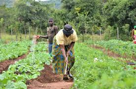
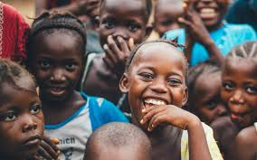

<!DOCTYPE html>
<html lang="en">
<head>
    <meta charset="UTF-8">
    <meta name="viewport" content="width=device-width, initial-scale=1.0">
    <link rel="stylesheet" href="styles.css">
    <title>Document</title>
</head>
<body>
</html>
<!doctype html>
</section>

<head>
<hr>


<section id="women" aria-labelledby="women-h">
    <p>  kitokwa </p>
    <p>   derick</p>
<h2 id="women-h">Women Rise — Economic Empowerment</h2>
<p>Gender equality is integral to sustainable development. Women Rise offers a combined package of skills training, microfinance, market access, and mentorship.</p>
<ul>
<li><strong>Skills training:</strong> sustainable agriculture, tailoring, solar technician apprenticeships.</li>



<li><strong>Microfinance:</strong> small, risk-tolerant loans with business mentoring.</li>
<li><strong>Market linkages:</strong> cooperative development and e-commerce enabling remote artisans to access global markets.</li>
</ul>


<h4>Outcome Snapshot</h4>
<p>Women graduate from the program with a 64% median increase in net household income and a 72% rate of continued entrepreneurship two years post-program.</p>
</section>


<hr>


<section id="resilience" aria-labelledby="resilience-h">
<h2 id="resilience-h">Disaster Resilience & Rapid Response</h2>
<p>Aurora maintains a dedicated rapid-response unit that pre-stages solar-powered shelters, water purification kits, and mobile clinics. Our model emphasizes rapid needs assessment, local partner activation, and transition from relief to recovery with a resilience-building focus.</p>


<h4>Notable Response</h4>
<p>Following the 2023 South Asia floods, Aurora deployed mobile water-treatment units and temporary learning centers within 10 days, supporting 85,000 affected people and enabling children to return to structured education while recovery programs were implemented.</p>
</section>


</main>


<footer class="site-footer">
<div class="container">
<nav aria-label="Footer Secondary">
<ul class="footer-nav">
<li><a href="index.html.html">Home</a></li>
<li><a href="programs.html">Programs</a></li>
<li><a href="about.html">About</a></li>
<li><a href="contact.html">Contact</a></li>
</ul>
</nav>
<p class="muted">© <span id="year"></span> Aurora Global Foundation</p>
</div>
</footer>
<script>document.getElementById('year').textContent=new Date().getFullYear();</script>
</body>
</html>